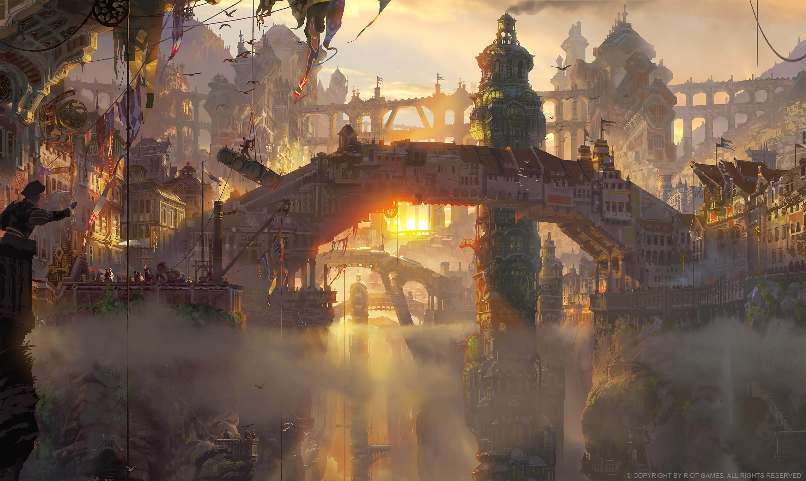

Oque esperar da serie?
A série mergulha em dois embates principais que se misturam durante a narrativa. O primeiro conflito envolve as irmãs Jinx e Vi, personagens muito populares entre os jogadores de League of Legends, que acabam se tornando adversárias anos após vários traumas separarem seus caminhos. Ambas estão inseridas e diretamente ligadas ao segundo confronto, envolvendo as cidades-irmãs Piltover, marcada pela busca incessante pelo progresso e pela inovação, e Zaun, definida por uma profunda desigualdade social, assim como uma mágoa constante pelo destrato da “vizinha rica”. Note que não se tratam de premissas exatamente originais, mas o que diferencia a história contada em “Arcane” — e o que talvez seja o seu maior mérito — é a coragem de abraçar as decisões mais difíceis dentro do que foi apresentado inicialmente.

Historia
de acordo com a sinopse oficial de Arcane, a série "gira em torno do delicado equilíbrio entre a riqueza de Piltover e a decadência de Zaun. As tensões entre essas cidades-estado só aumentam quando Piltover cria o Hextec, que permite que qualquer pessoa controle a energia mágica. Já em Zaun, uma nova droga chamada cintila transforma humanos em monstros. Essa rivalidade entre as cidades divide famílias e amigos".
"Arcane é uma história que fala sobre dualidade, contando como os personagens se veem divididos entre dois lados de uma cidade com oportunidades e valores opostos, mas, ao mesmo tempo, complementares - cada um com seus próprios méritos e problemas. Você pode ser o herói na sua própria história e o vilão na de outra pessoa", disse Alex Yee, cocriador da série.

qualidade
A qualidade de produção é impecável! A escolha artística de usar texturas pinceladas para a animação traz um toque muito agradável de se assistir. E juntamente com uma vasta quantidade de trilhas sonoras originais incríveis que já estávamos acostumados vindo da Riot.

trilha sonora
A música está presente em todos os filmes/séries/animes, mas raramente costuma fazer tanto sucesso por conta disso. Há tempos não vemos músicas bombarem tanto quanto “Enemy”, do Imagine Dragons, que está presente na abertura da série “Arcane”, lançada recentemente e que está fazendo um enorme alarde mundo à fora. Mas a série tem outras diversas músicas que compõem a sua trilha sonora, separadas em 3 atos.